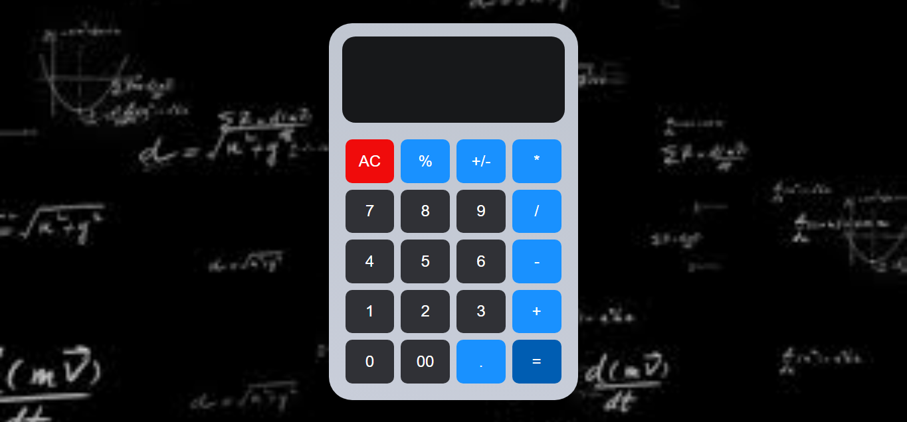

Projetos
-
Cadastro de Usuários
fornt-end e back-end Em breve
Ver Projeto -
Conversor de Moedas
Em breve
Ver Projeto -
Nelly Sorteador
Em breve
Ver Projeto -
Loja Automotiva

A Loja Automotiva é um projeto de um site de vendas fictício voltado para carros de luxo. Ele apresenta uma interface simples e moderna,
Ver Projeto -
Site Animado

A proposta é proporcionar uma navegação divertida e fluida, explorando animações suaves e interatividade para tornar a experiência mais interessante.
Ver Projeto -
Relogio digital

Nelly - Relógio Digital é uma aplicação simples de relógio digital, desenvolvida para mostrar a hora atual de forma clara e objetiva.
Ver Projeto -
Galeria de Imagens

Galeria de Imagens" é uma aplicação web que exibe uma coleção de imagens em uma interface limpa e visualmente atraente.
Ver Projeto -
Altenador de Cores

- Projeto onde o usuário pode alterar as cores de fundo de uma página usando JavaScript.
Ver Projeto -
Calculadora
- Uma calculadora web interativa construída com HTML, CSS e JavaScript puro, oferecendo operações matemáticas básicas e funcionalidades adicionais.
Ver Projeto -
Galeria de Imagens
- Este projeto é uma galeria de imagens responsiva que apresenta várias fotos organizadas em um layout elegante. A galeria permite que o usuário visualize as imagens de forma interativa.
Ver Projeto -
Page Login

- Um aplicativo simples que exibe a previsão do tempo de qualquer cidade em tempo real. Ele utiliza a API OpenWeather para buscar informações como temperatura, descrição do clima e umidade.
Ver Projeto -
To Do List

- Criando uma aplicação web interativa para gerenciamento de tarefas. A aplicação permite adicionar, marcar como concluídas e remover tarefas, com armazenamento local.
Ver Projeto